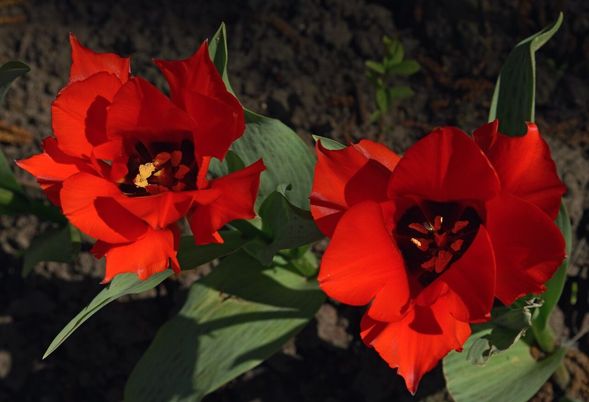
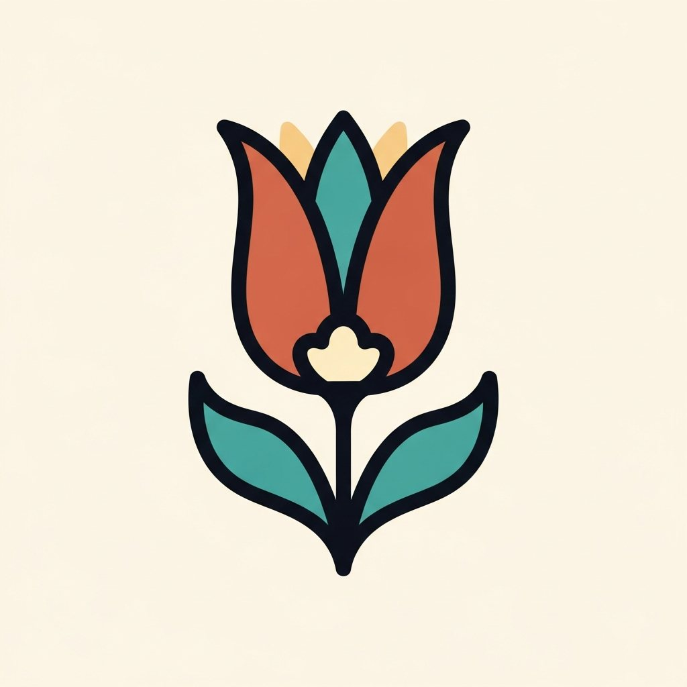
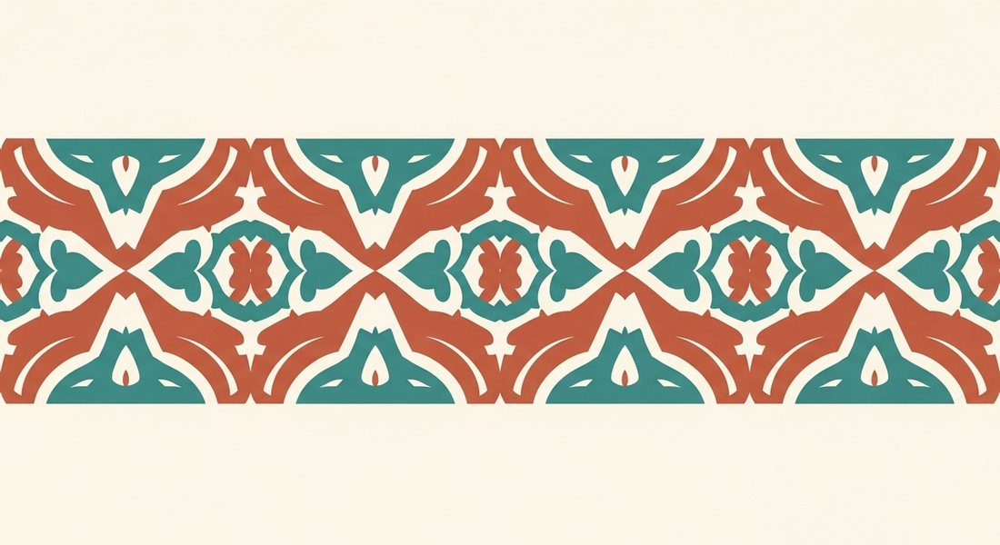
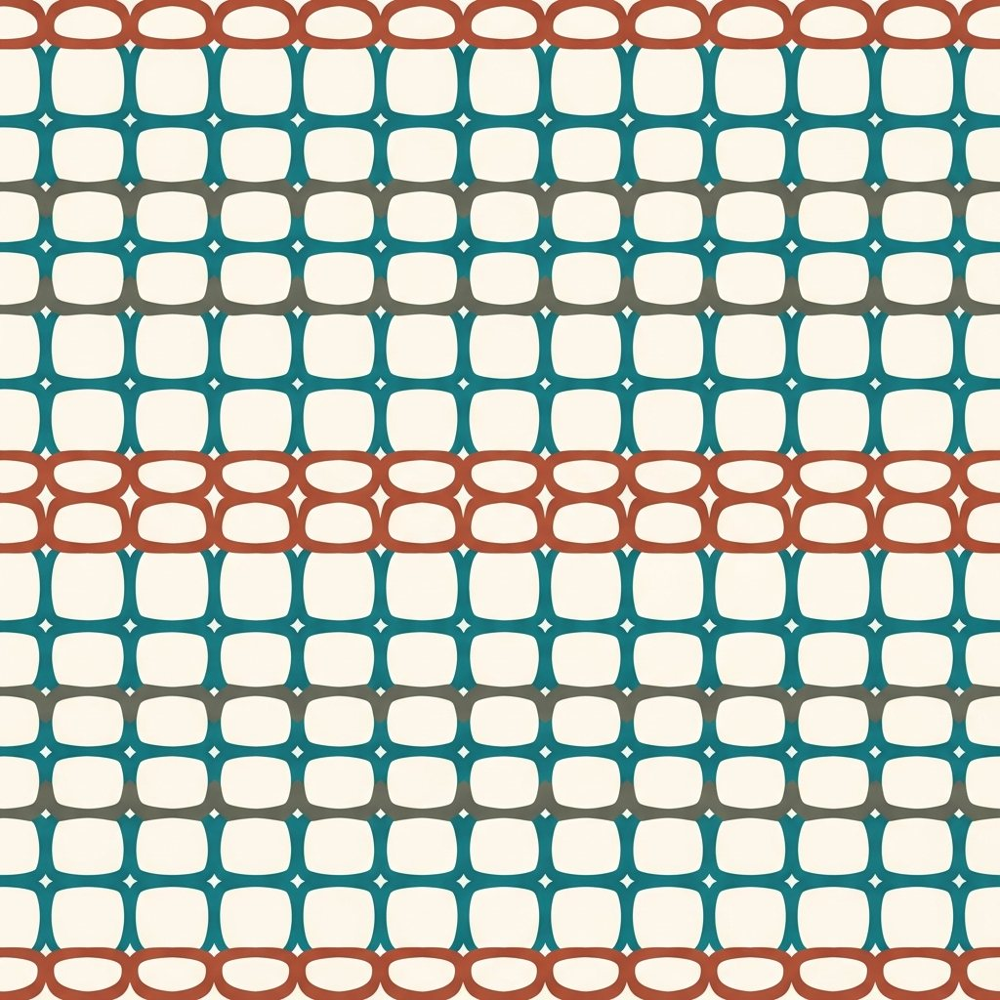
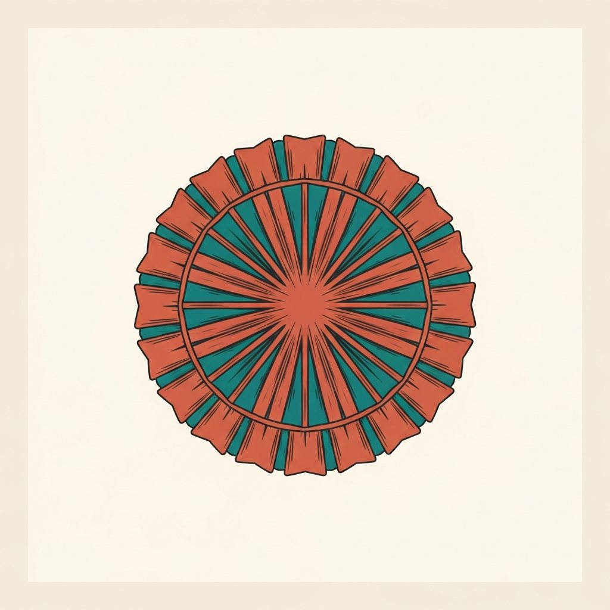

Көркем еңбек · 2-бөлім · Сәндік-қолданбалы өнер Art & Craft · Section 2 · Decorative & Applied Art Художественный труд · Раздел 2 · Декоративно-прикладное искусство
🎨 Стильдеу және композициядағы ою-өрнек мотивтері
🎨 Stylization & Ornament Motifs in Composition
🎨 Стилизация и мотивы орнамента в композиции
Табиғи пішінді қалай мотивке айналдырып, өрнекке жинақтаймыз. How a natural form becomes a motif and is arranged into a pattern. Как природная форма превращается в мотив и собирается в узор.
Стильдеу (стилизация) — нақты табиғи нысанды (гүл, мүйіз, құс) шартты, қарапайым әрі сәндік мотивке айналдыру. Суретші артық бөлшектерді алып тастап, басты пішінді ашады, оны симметриялы әрі жазық түспен береді. Себебі өрнек қайталануы, анық әрі тануы оңай болуы керек — сондықтан ол шынайы суреттен гөрі белгіге ұқсайды. Stylization is turning a real natural object (a flower, a horn, a bird) into a simplified, conventional, decorative motif. The artist removes extra detail, brings out the main shape and renders it symmetrically with flat colour. A pattern must repeat and be easy to recognise — so the motif becomes more like a sign than a realistic picture. Стилизация — это превращение реального природного объекта (цветка, рога, птицы) в условный, упрощённый и декоративный мотив. Художник убирает лишние детали, выявляет главную форму и передаёт её симметрично, плоским цветом. Узор должен повторяться и легко узнаваться — поэтому мотив становится скорее знаком, чем реалистичным изображением.
Табиғаттан — мотивке From Nature to Motif От природы — к мотиву

табиғи пішінnatural formприродная форма

→ сәндік мотив→ decorative motif→ декоративный мотив
Стильдеудің 4 қадамы:4 steps of stylization:4 шага стилизации:
Жеңілдету.Simplify.Упрощение. Артық бөлшектерді алып тастаймыз.Remove unnecessary detail.Убираем лишние детали.
Жинақтау.Generalize.Обобщение. Пішінді анық силуэтке айналдырамыз.Turn the shape into a clear silhouette.Превращаем форму в чёткий силуэт.
Симметрия.Symmetry.Симметрия. Мотивті теңгеремелі етеміз.Make the motif balanced.Делаем мотив уравновешенным.
Жазық түс.Flat colour.Плоский цвет. Көлеңкенің орнына таза, жергілікті түс.Replace shading with clean, local colour.Вместо светотени — чистый локальный цвет.
Композиция бойынша өрнек түрлері Types of Ornament by Composition Типы орнамента по композиции
🔍 Үлкейту үшін схеманы басыңыз. 🔍 Tap a scheme to enlarge it. 🔍 Нажмите на схему, чтобы увеличить.

Таспалы (бордюр)Border (ribbon)Ленточный (бордюр)
Мотив жолақ бойымен қайталанады. Жиек, өң, жең, маңдайшаны әрлейді.The motif repeats along a strip. It decorates edges, hems, sleeves and cornices.Мотив повторяется вдоль полосы. Украшает каймы, края, рукава, карнизы.

Торлы (раппорт)Net (all-over)Сетчатый (раппорт)
Мотив барлық бағытта торша бойымен қайталанып, бетті толтырады. Мата, кілем, тұсқағаз.The motif repeats over a grid in all directions, filling a surface. Fabric, carpets, wallpaper.Мотив повторяется по сетке во все стороны, заполняя плоскость. Ткани, ковры, обои.

Тұйық (розетка)Closed (rosette)Замкнутый (розетка)
Мотив шеңбер не шаршыға орталық симметриямен сыйдырылады. Тәрелке, төбе, шаңырақ, тақия.The motif is fitted into a circle or square with central symmetry. Plates, ceilings, shanyrak, skullcap.Мотив вписан в круг или квадрат с центральной симметрией. Блюда, потолки, шаңырақ, тюбетейка.
Композиция заңдары Laws of Composition Законы композиции
🔁 ЫрғақRhythmРитм
Элементтердің бірдей аралықпен қайталануы.Repetition of elements at equal intervals.Повторение элементов через равные промежутки.
🪞 СимметрияSymmetryСимметрия
Айналық (осьтік) және орталық (сәулелі) теңгерім.Mirror (axial) and central (radial) balance.Зеркальная (осевая) и центральная (лучевая).
🧩 РаппортRapportРаппорт
Қайталанатын ең кіші өрнек бөлігі.The smallest repeating fragment of a pattern.Наименьший повторяющийся фрагмент узора.
⚖️ КонтрастContrastКонтраст
Түс, өлшем, пішін айырмасы — мәнерлілік үшін.Difference in colour, size or shape for expressiveness.Различие по цвету, размеру, форме для выразительности.
💬 Қорытынды 💬 In a nutshell 💬 Главное
Стильдеу табиғатты өрнек тіліне аударады, ал композиция заңдары (ырғақ, симметрия, раппорт) оны әдемі тұтастыққа жинайды. Осылай шексіз қайталауға болатын ою-өрнек туады. Stylization translates nature into the language of pattern, and the laws of composition (rhythm, symmetry, rapport) organise it into a beautiful whole. This is how an ornament is born that can be repeated endlessly. Стилизация переводит природу на язык узора, а законы композиции (ритм, симметрия, раппорт) собирают его в красивое целое. Так рождается орнамент, который можно повторять бесконечно.